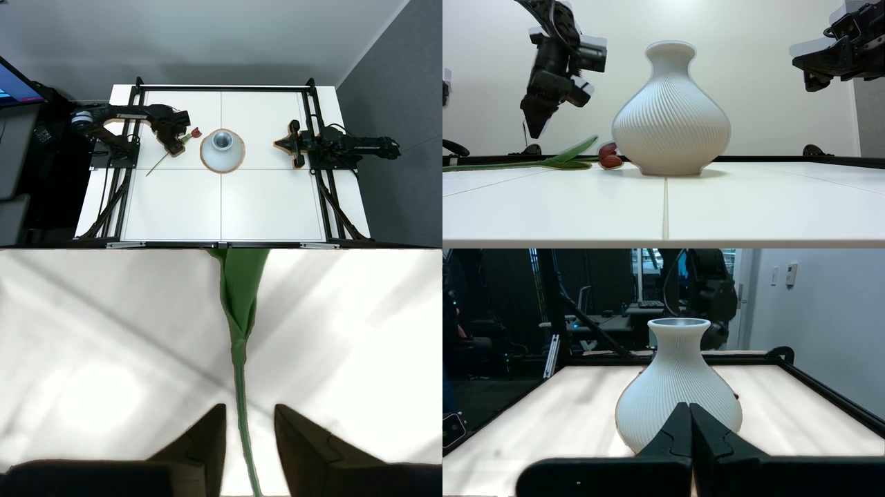

Visual coverage helps
The matched replacement experiment supports a practical result: changing the appearance of existing demonstrations can improve robustness to the visual shifts we tested, at the same effective data volume and training schedule.
Accepted NeurIPS 2026 Robot Learning Workshop
Scalable Multi-View Visual Augmentation
for Robot Learning
Reusable scenes for
robot demonstrations
Augmentron changes the visual setting of a recorded robot demonstration. We generate scene assets once and render them through the recorded camera poses. The new appearance stays consistent across fixed cameras, moving wrist cameras, and time. State, actions, language labels, and timing remain unchanged.
Two fixed cameras. Two wrist cameras.
Four-view augmentation on eight H100s.
Pooled success with unseen distractors.
A policy can learn to put a cup on a saucer and still struggle when someone leaves extra objects on the table. In our experiments, a policy trained only on real demonstrations reached 66.7% pooled success in the original setup. Add unseen distractors, and success fell to 18.0%.
We wanted to widen the visual coverage of those demonstrations. An edited scene must hold across an entire trajectory and several cameras. Wrist cameras move with the arm. A generated table needs to remain anchored as the viewpoint changes.
The generative model produces a scene representation that we reuse throughout the demonstration. Longer trajectories mainly add rendering and compositing work, rather than repeated generative inference.
Forward kinematics projects the robot mesh into each camera. Task annotations become SAM 3 prompts for task objects and the workspace. Robot and task-object regions are protected during compositing.
A temporal median recovers a mostly foreground-free reference image. FLUX generates a static scene image and a six-face room representation. A surface texture can be anchored to the calibrated table plane.
Fixed-camera renderings are reused over time. Wrist-camera poses come from robot state and calibrated transforms. The original protected pixels are composited over each rendered view.

Two fixed views and two wrist views share the generated assets. Environment edits change the room. Workspace edits change the surface under the task.
The pipeline augments four streams. The policy uses the high fixed view and both wrist views.

1,793 real demonstrations
9.16 hours of data
3 manipulation tasks
π0.5 policy initialization
We tested cup-on-saucer placement, towel folding, and flower-in-vase insertion. Each policy faced the original setup, added task-irrelevant objects, and a workspace shift from wood to reflective steel.
Real and Augmentron 50/50 both use 1× effective data volume and the same 30k-step training schedule. Every source demonstration is represented once. The 50/50 recipe uses 50% real, 25% environment edits, and 25% workspace edits.
The clearest gain is under distractors. Pooled success rises from 18.0% to 45.3%, a 27.3-point increase. All three tasks improve in this condition. Pooled success also improves in the original setup and on the steel surface.
The gains vary by task. In the original setup, cup-on-saucer success falls from 86% to 72%, while towel and vase success improve. The pooled result should be read alongside the individual tasks.
Each task result uses 50 rollouts. The 30k Augmentron 33/67 checkpoint comes from a run scheduled for 45k steps. Its data volume and decay schedule differ from the matched comparison.
| Steps | Recipe | Volume | Task | ID | Distractors | Steel |
|---|
Two flower-in-vase trials with added distractors.
Illustrative trials from the intern presentation. They show different rollouts, with manually reset starting configurations. The aggregate results above carry the comparison.
Reusing scene assets changes the cost of processing a trajectory. Augmentron processes all four views in 0.47 hours on the benchmark source set.
Same 30-minute source set. 104 episodes. One node with eight H100 GPUs. These are wall-clock runtimes, including cold model construction through local output audit.
A measured single-view run takes 10.31 hours. The paper estimates 23.79 hours for four views by extrapolating per-view stages. The four-view figure was not measured directly.
Timing excludes queueing, image retrieval, artifact staging, inter-boot delays, and publication.
The matched replacement experiment supports a practical result: changing the appearance of existing demonstrations can improve robustness to the visual shifts we tested, at the same effective data volume and training schedule.
At the exploratory 30k checkpoint, the larger 33/67 recipe improves pooled distractor success over 50/50, but lowers ID and workspace success. Its schedule also differs. These runs do not establish a scaling trend.
At 45k steps, Augmentron leads RoboEngine and Masked Noise in all three pooled conditions. Augmentron uses 3× data volume; both baselines use 2×. Masked Noise is competitive. The comparison does not isolate which pipeline component drives the gain.
We evaluate three tasks, three visual conditions, and one training seed. Rollouts capture evaluation uncertainty, not variation across training runs. The pipeline needs camera calibration, robot geometry, and usable masks. It changes appearance while retaining the recorded behavior.
Augmentron: Scalable Multi-View Visual Augmentation for Robot Learning
Tanay Tandon and Aseem Doriwala
Scale AI
Accepted to the 8th Robot Learning Workshop:
Is Physical AI Going Zero-Shot?
NeurIPS 2026
The motivation, augmentation examples, and physical rollouts from my Scale internship.
The presentation covers an earlier version of the work. This page uses the paper for the final method and experimental results.
@misc{tandon2026augmentron,
title = {Augmentron: Scalable Multi-View Visual
Augmentation for Robot Learning},
author = {Tandon, Tanay and Doriwala, Aseem},
year = {2026},
note = {Accepted to the 8th Robot Learning Workshop
at NeurIPS 2026}
}